DASH: 4DHashEncoding with Self-Supervised Decomposition for Real-Time Dynamic Scene Rendering
DeformableGS -- 隐式形变函数驱动的连续性 4DGS -- 低秩平面特征驱动的连续性 DASH -- 动态子集上4D hash表示驱动的连续性
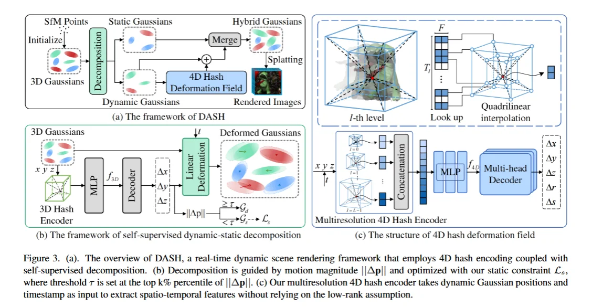
Hexplane / 4DGS 这些低秩分解把时空特征压得太狠了，会导致特征重叠，细节错乱。但是如果要在全场景上做 4D hash 又太昂贵了而且容易哈希冲突， 所以先用 self-supervised dynamic-static decomposition 来进行动静分离，再对动态部分做 4D hash，摆脱了对低秩假设的依赖（4D hash 类似于 稀疏体素这样的 4D 表征）。
per-scene 的，不泛化。
4D 哈希编码提供了无低秩约束的显式表示。真实动态往往不是低秩的，非要低秩表示就会：不同运动区域共享一组特征，从而有特征干扰。而且高频表示不好，太平滑。表达力要比 Hexplane 这些靠低秩 4D 分解的方法强。
这种 4D hash 表示能够在那些低秩分解的方法得到高度重叠坐标的场景下，依旧得到不重合的特征，这就可以减少特征的串扰了。
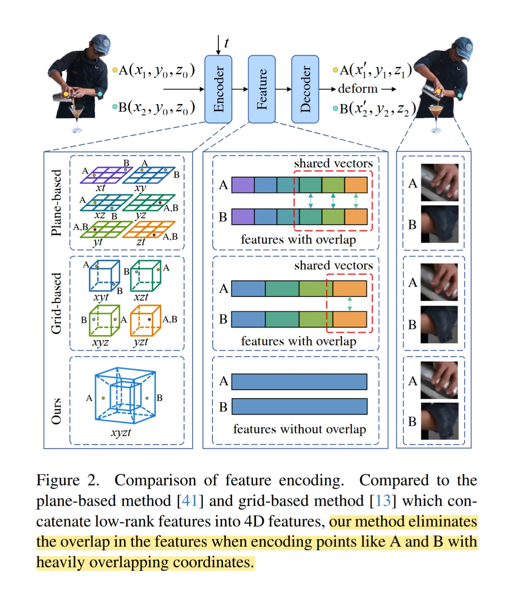
静态用标准 GS 重建；动态用 4D hash encoder 编码，再解码预测 deformation field。Humans as a Calibration Pattern: Dynamic 3D Scene Reconstruction from Unsynchronized and Uncalibrated Videos
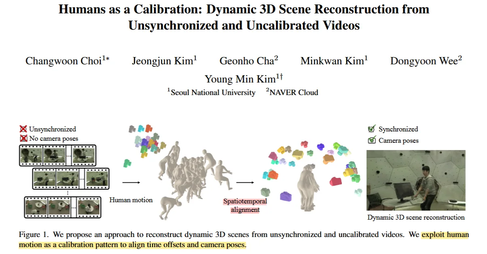
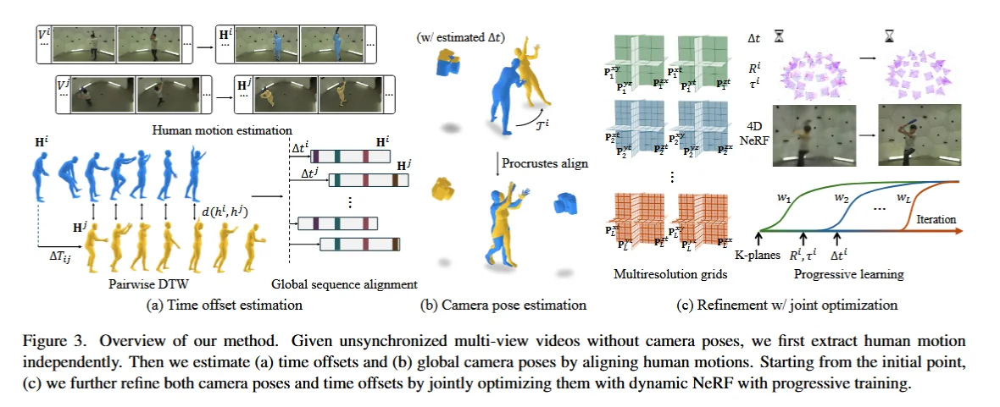
从未同步/未标定的多视角视频中重建有人类的经动态三维。
有人/内参已知/知道跨视角人体对应关系。—— 把人作为参考，舍去了相机同步和 pose 已知的需求。
先从单个视频中估计人体运动信息（SLAHMR） - 估计 \(\Delta t\) 和 pose 初值（强鲁棒估计）- coarse to fine 训练 4D nerf volume。
底层是 K-planes / 4D nerf volume 所以也是时间连续。per scene 的。
强依赖于 人类运动估计，多人的时候还要跨视角人物的对应关系。SLAHMR 要是在快动作下崩了后面就全崩了。
SHaDe: Compact and Consistent Dynamic 3D Reconstruction via Tri-Plane Deformation and Latent Diffusion
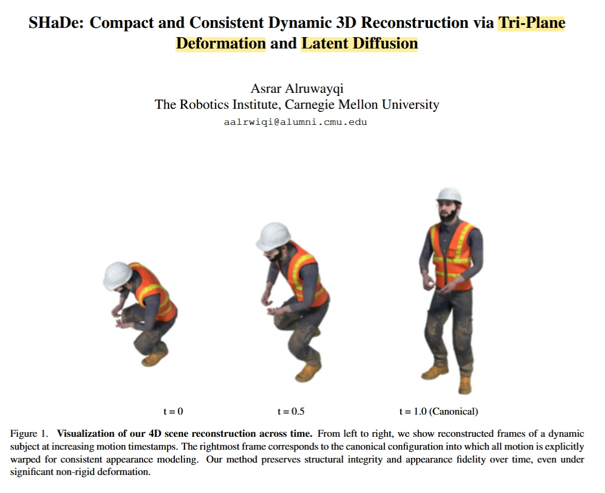
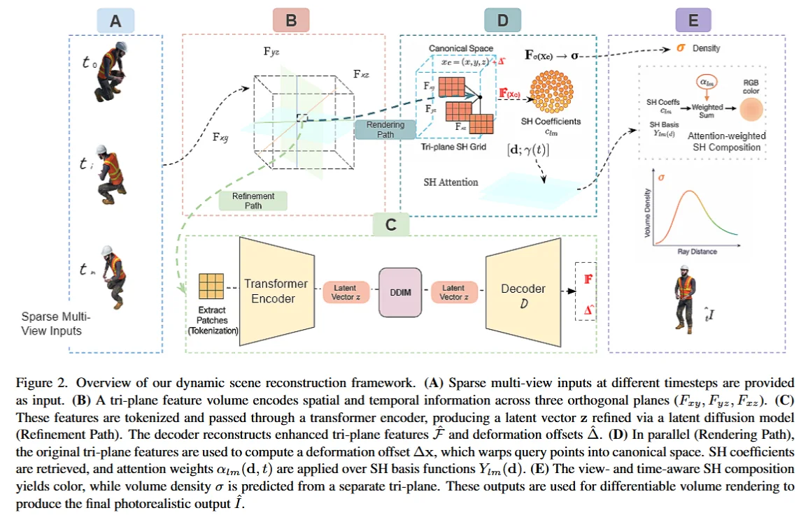
Tri-plane 替代 D-NeRF 的 deformation MLP ：结构更显式，查询更轻量；显式时空缓存换掉隐式网络的过拟合（平滑）与长时间推理。
latent diffusion 做时序约束：tri-plane -> token -> encoder -> latent vector -> decoder -> 增强后的 tri-plane features 和 deformetion offsets. 这个扩散模型时序正则，约束相邻帧latent 变化平滑。面向：ambiguous / OOD motion、sparse views、fast motion.
模型学的是控制点 \(c_j\)，不是每一时刻的状态；时间连续性由 basis function 和 knot vector 保证。
📌 Spline Deformation Field (2025-07)
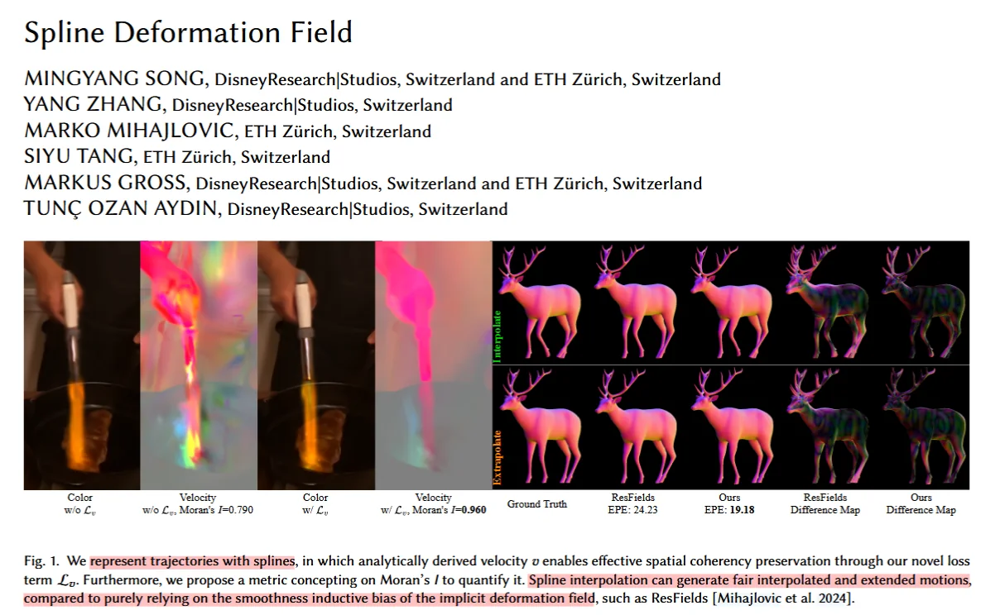
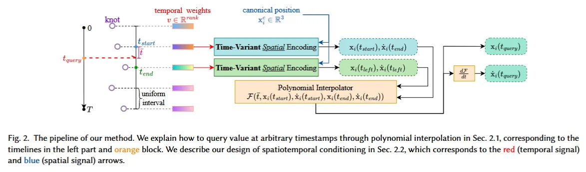
==这个文章回答了：为什么 spline 比 MLP 更适合建模 dense deformation field。== 把动态形变从 MLP 回归形变 改成 显式 spline deformation 来描述每一个点随时间的运动。- 自由度由 Knot 数显式控制；
- 速度/加速度能直接求导得到；
- 时间连续性不再依靠网络偏置，而是靠曲线本身的连续性。
不直接回归 deformation，而是学习一组 样条控制点 / 样条基函数系数，使 3D 轨迹在时间上天然连续、可微。
传统方法通常用一个隐式 deformation field，把 canonical 空间位置映射到时间相关的 offset；sdf要替换的就是这，采用 Canonical-Deformation design：对 canonical 空间中的点，用一个坐标网络预测样条的 knot 属性和 tangent，再通过样条插值得到该时刻的位移。
一种 deformation field 的时间建模方式。
SDF 的对象是 deformation trajectory，而SeeU 的对象是 shared motion bases 和 camera。
SplineGS：Robust Motion-Adaptive Spline for Real-Time Dynamic 3D Gaussians from Monocular Video (2024-12)
==给人的感觉是 Defomable 3DGS 的直接优化。==
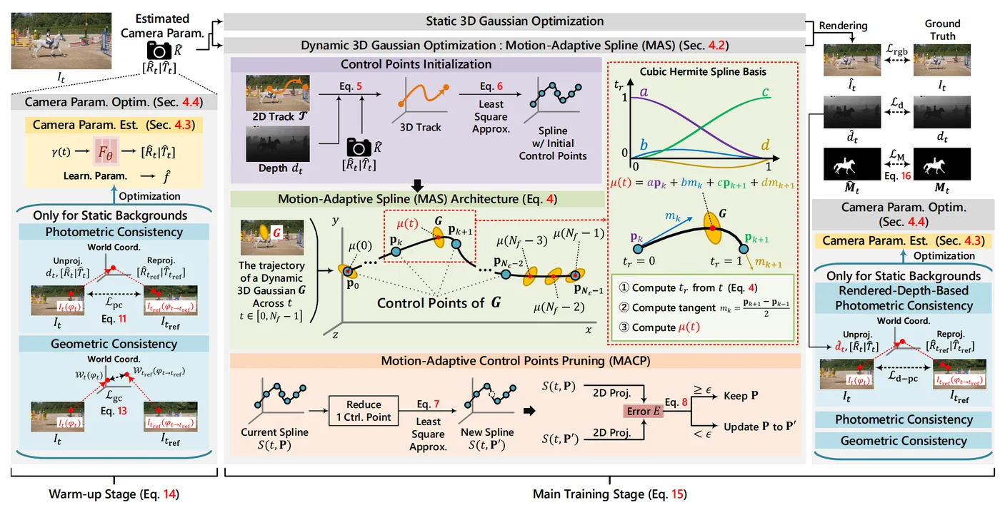
每一个高斯都有自己的 spline 曲线。 但是 SeeU 中的高斯只有一个共享的系数（每个高斯运动由少量共享 motion bases 线性组合而成），spline 是由 motion bases 决定的。SplineGS 是 primitive-level trajectory，而 SeeU 是 scene-level dynamical modes，外推是沿着共享运动主方向延伸；。
==这也引出了 SeeU 的强假设：场景的动力学由少数共享的模态就能解释。==
MAS 把高斯的 \(u(t)\) 写成 spline 函数。用的是 cubic Hermite spline。动静分离 / 双阶段（warm-up & main-stage），warm-up 阶段专注优化相机参数，用静态的内容定位相机，然后再联合优化动/静高斯以及camera和MAS。
控制点初始化：2D tracking + metric depth prior -> 3D tracking -> 最小二乘 -> dynamic gaussian 控制点。虽然是 colmap-free，但是要 MDE 和 2D Tracker 来提供先验。
==Motion-Adaptive Control points Pruning==（见图）。少一个控制点要是不影响投影后的图像那就把这个控制点给剪掉。
AD-GS: Object-Aware B-Spline Gaussian Splatting for Self-Supervised Autonomous Driving (2025-07)
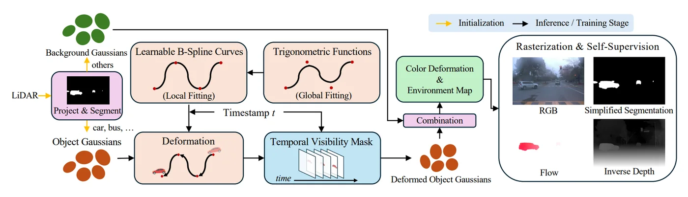
这个的 spline 更上一层，是建立在 object 层面的，每个对象一套运动规则。（对象级刚体运动，面向自动驾驶，object gaussians）- 先把 scene 分成 objects 和 background，再对动态对象的平移用 locality-aware B-spline curves，对旋转用 B-spline quaternion curves.
- 叠加 global-aware trigonometric functions；还加入 visibility reasoning 和 physically rigid regularization。
这个 spline 不算 dense deformation，更像是 object trajectory。
Trace Anything: Representing Any Video in 4D via Trajectory Fields (2025-10)
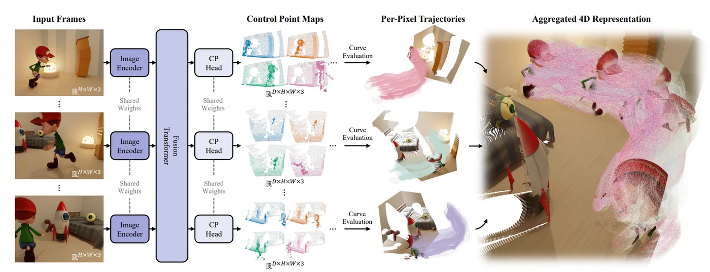
Pixel 级别的 trajectories，one-pass feedforward 输出 control pointmap，每个像素一条 B-spline trajectory，并且可以query 任意 t 。==以 trajectory field 作为 4D video representation。==力大砖飞：Training takes 7.22 days on 32 NVIDIA A100 80GB GPUs
一条从 \(frame_i\) 某像素预测出来的轨迹，如果在 \(frame_j\) 的采样时刻求值，就应该正好落在该物点在 \(frame_j\) 的真实 3D 位置上。
Trace Anything: pixel-level dense trajectory field；而 SeeU: scene-level dynamical modes。
per-pixel 控制点太吃计算资源了，限制复杂运动表达。精度目前还不一定比某些 sparse 3D tracking 方法好。
SeeU: Seeing the Unseen World via 4D Dynamic-aware Generation
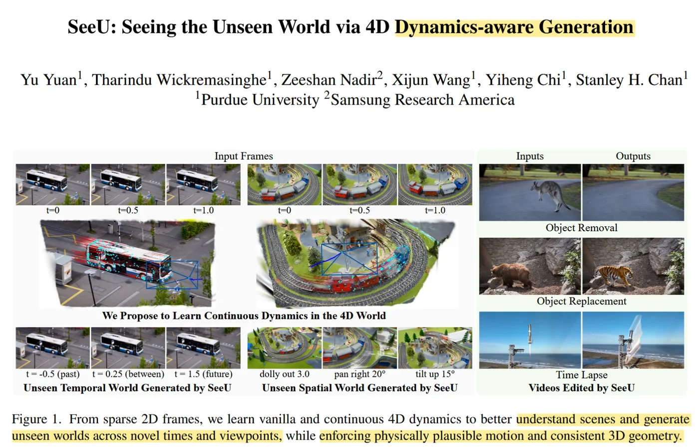
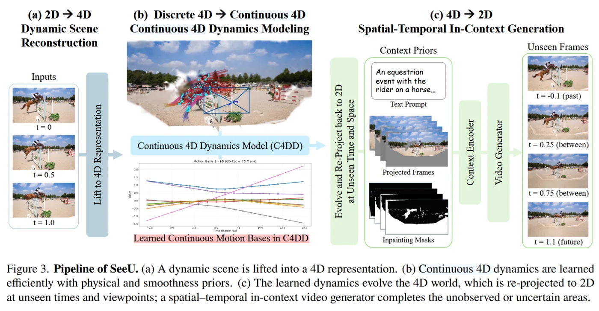
特点： *continuous 4D dynamic model / unseen time / unseen viewpoint前提： focused on pronounced, smooth, and temporally stable foreground motion.
方案： monocular frame sequence - shape of motion - ==discrete 4D - b样条 - continuous 4D== - render - diffusion 补全。把一个离散的 4D 轨迹，通过 B 样条曲线，拟合成一个连续的 4D 表示。
SeeU 更像在学 structured motion subspace，而不是给每个 primitive 用 temporal MLP。
SeeU45是自己的数据集，由45个动态场景组成，源于自己的采集和公开资源。
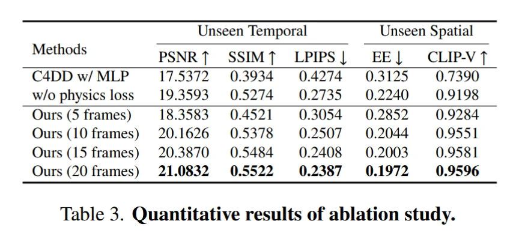
2D - 4D: megasam (camera intrinsics / extrinsics / depth) - track-anything (foreground objects) - TAPIR (2D tracking) - 4D 表示（camera pose / gaussian）不直接在 2D 上做视频生成。先从稀疏单目帧重建 4D Gaussian 场景，再把共享运动基和相机轨迹用 B-spline 参数化成连续时间的 C4DD（Continuous 4D Dynamics Model），最后回投到 2D 做时空 in-context video generation。
把 per-point deformation MLP 换成低秩运动基 + spline 连续化